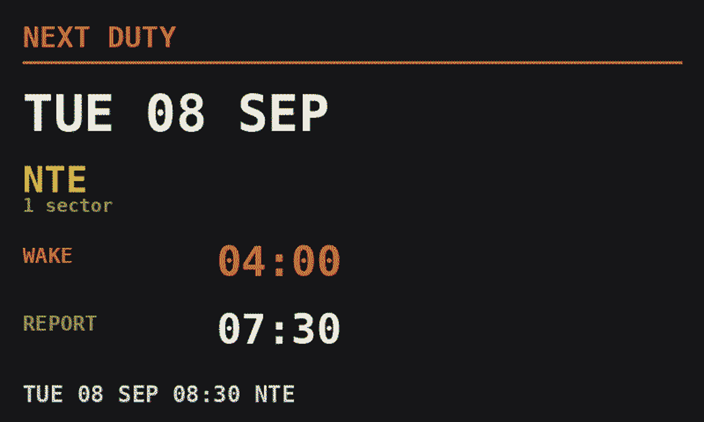
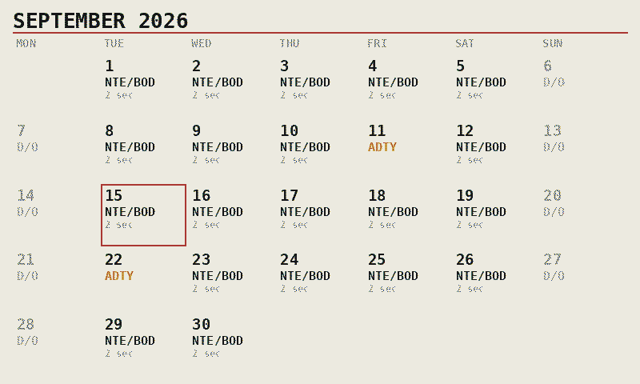
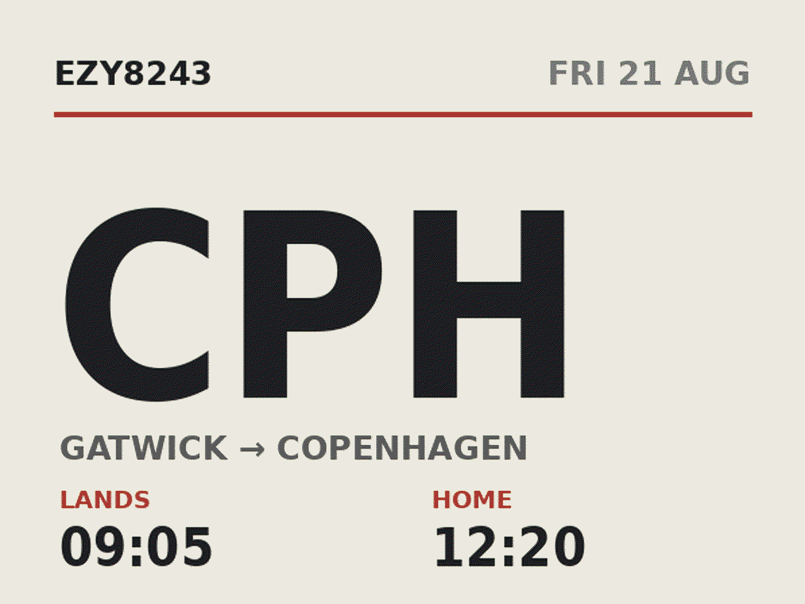

How long they get to keep you.
It shows the next duty as well as this one, so the people at home can always see how much time they have with you. No need to ask, or wait for an answer.
ETA — confirmed.
Ident can show your current flight, your estimated arrival time, and even what time you'll arrive home based on traffic conditions. It shows your next duty, so your loved ones can always see how much time they have with you.
Ident uses live data from Google Maps for estimating commute time, and AeroDataBox or Flightradar24 for an up-to-date flight time.
Your roster. Always accurate.
Changes on report? No problem.
The board re-reads your roster regularly. When it moves, it moves.
Called from standby?
It's on the wall before you've finished packing. No group chat, no relay.
Delayed?
Landing and home times slide with the day. Nobody's working off this morning's plan.
Know you're free
Days off and early starts show days ahead — the rest of the family can plan without asking.
They know when to call
Airborne, turnaround, or already driving. No worrying about whether you can talk.
Tomorrow, from the bedside
Report time and where you're going. The two things worth knowing before lights out.
The kids can read it
Big destination, plain times. Old enough to read a clock is old enough to work out when Mum or Dad lands.
Commuter?
Add your positioning flights.
Ident makes your planning a little easier.
Type the flight number
Living in Amsterdam, based at Gatwick? Add the 05:00 AMS–LGW and Ident looks up the route and times itself. Two boxes, once.
It becomes part of the day
The board follows you out of Amsterdam, then hands over to the roster duty when you report. At home they see one continuous day, not a gap.
Anything off-roster works
Deadheading, a night before at a crashpad, the flight home on leave. If it has a flight number, it can go on the board.
All of your travel included
Ten minutes from the crashpad mid-block; a two-hour flight home after the last sector. Set both, and the home time is right on the day it matters.
Ident shows everything you need for the day.
If you tell Ident how long you take to get ready, Ident gives you an alarm time to set.
Set it once
Ninety minutes before report, or whatever your morning actually takes. It shows on days off and while the board counts down to report.
It follows the roster
When crewing move your report time, the wake time moves with it. There is no second thing to remember to change.
Commuting? It adds up.
Optionally counts the journey to report as well — so if you need to get to your base before day 1, Ident accounts for the extra commute time.

The question before the light goes off.
Press the button on the frame and the next duty comes up: the date, where you're going, what time to be awake and what time to report. On a day off it's already there.
Make it suit your room.
Many different styles to choose from: change it from your phone or with a button on the frame.

Solari board
the defaultSplit-flap departure board. Route, landing time, home time, progress.

Tiles
most detailSix panels: flight, route, landing, home, live status and time to run.

Duty timeline
long daysThe whole duty as one bar, with a marker showing where you are in it.

Flip clock
retroMechanical flip-tile lettering, like an old station clock.

Rail blue
calmA softer railway palette for rooms where black would shout.

Cockpit
for the nerdsInstrument-panel colours. Familiar if you spend your day behind one.
Setup
Plug it in. Set it up from your phone.
No keyboard, no monitor, nothing to type. It raises its own Wi-Fi network the first time you switch it on — join it from your phone, pick your home network, done.
What's behind it
Two parts. A memory card. Simple.
No enclosure to design, nothing proprietary, nothing soldered. This is all you need.
The computer
A Raspberry Pi Zero, about the size of a stick of gum, plugged directly into the display. That's the assembly - no soldering, no wiring.
Four buttons
On the edge of the frame, reachable with the display hung on a wall. Power, change styles, QR code, and tomorrow's duty.
The panel
Colour e-paper, like a Kindle. It holds its picture with the power off, and never glows at you in the dark.
Customised to your needs
Not only can you choose from different display styles - choose a larger ePaper display, or try an LED matrix display for a real departure board look.
Worth knowing before you buy
The things we'd want to be told.
e-paper isn't instant
Around 30 seconds to redraw, so it updates on change rather than ticking. Want live movement? Choose the LED matrix.
Rosters vary by airline
Built and tested against easyJet eCrew feeds. Fly for someone else? Help us add your airline and yours is free.
You build it
No soldering, but you'll flash a memory card and follow a guide. An unhurried hour.
Buy your own parts
We sell the software. No hardware markup, nothing proprietary.
It updates itself
New versions arrive on the device. You choose when to install.
Illustrated build guide
Step by step, written for someone who has never used a Raspberry Pi.
Real support
Unsure about something? Let us know how we can help. Ask anything.
Privacy and control
We take privacy seriously.
We never see your roster or give anyone else access to it — only the current flight number. You can choose to use a calendar link or an offline copy of your roster. During setup you can choose to enable live traffic information, if you provide your home location — this is only sent to Google Maps. You control your Ident on your home WiFi network, securely.
You have control.
Sensitive roster codes such as FTGD, UNFT, NSO, SOC, MEET, WFTU, HOSP or RESN can be automatically hidden — these will then show as days off or standby, depending on your preference.
Discretion
Privacy when it matters most
Some days on a roster are nobody else's business.
Compassionate leave, sickness, fatigue, a meeting - Ident hides sensitive roster codes by default, showing instead as an ordinary day off.
You choose which. Setup lists every sensitive roster code, and you can tick any you'd rather show. Nothing is revealed unless you ask.
What you tell others should be your decision, made in your own time. Ident is designed to be displayed prominently, without having to worry about what it shows.
It isn't just hidden on screen: those codes are discarded when your roster is read, so they never reach the device's storage at all. Nothing that isn't kept can appear later.


Your roster never leaves the display.
Ident fetches your roster over your own connection, and keeps it on the device. Nobody else sees your schedule - because we never receive it.